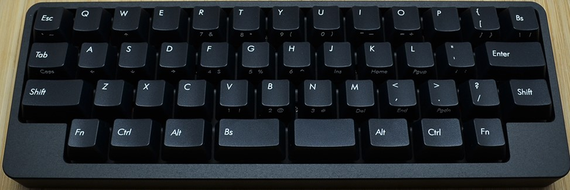
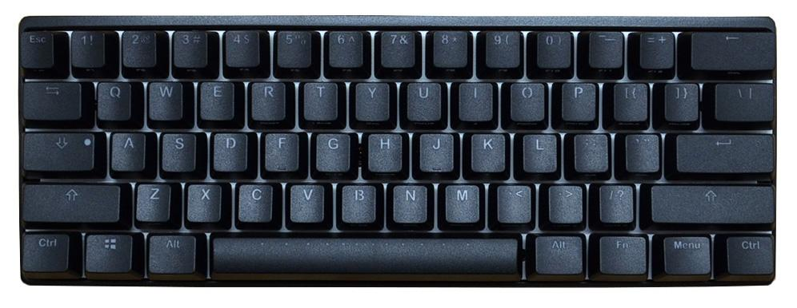
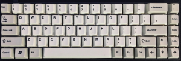
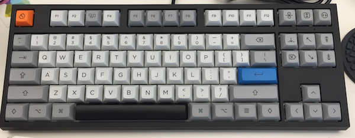
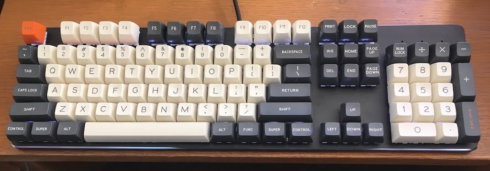

Details
Sizes
There are several sizes of keyboard, defined by the number of keys.
40%A 40% Keyboard only has Keys for lettering, such as letters and a shift and backspace as well as a backspace and a Tab.  |
60%Probably the most common size in the custom keyboard Industry. Has the same keys as a 40% as well as numbers and certain others.  |
65%My favourite size, because of the extra arrow keys. It also has three additional keys. These are most commonly Delete, Page Up and Page Down.  |
75%/TKLA "normal" keyboard, just without the numpad. TKL stands for TenKeyLess.  |
95%/100%/full sizeHas the keys of the keyboard you are probably using, if you have a mainstream Keyboard.  |
Lube
Lube is used to significantly silent switches. I've included some typing sounds under here.